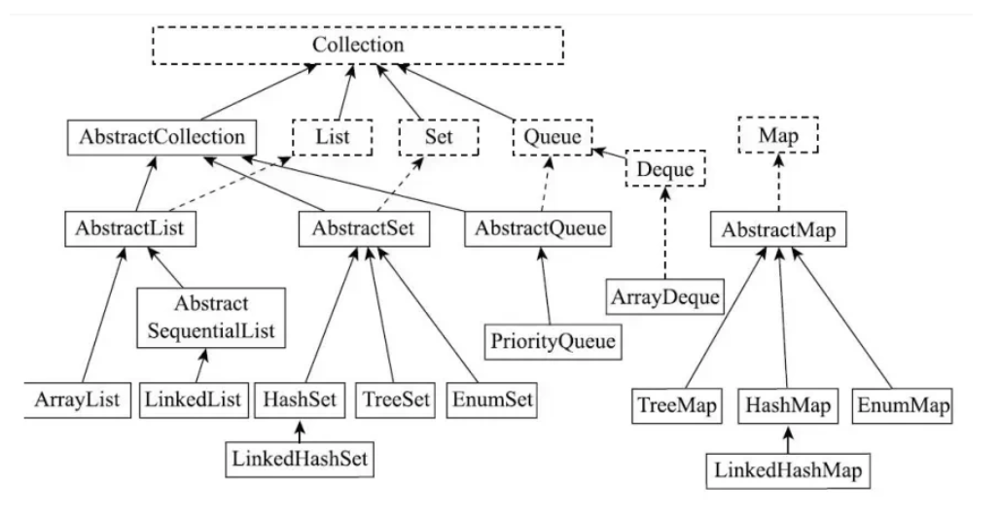

Chapter9 Collections
集合类 ：感觉有点像
Cpp中的stl下面是官方的定义 ：The java library can help you accomplish the traditional data structuring needed for serious programming. 其实就是一个库方便我们来调用传统的数据结构。
Introduce
我们这里区分两个概念 Collection 和 Collections
Collection: 表示的是Java集合框架的一个接口，它是所有集合类的基础接口。它定义了一组通用的操作和方法，如添加、删除、遍历等，用于管理一组对象。Collection接口有许多Implementations如List,Set和Queue.Collections: 表示的是Java提供的一个工具类，位于java.util包中。它提供了一系列的静态方法，用于对集合进行操作和算法。Collections中包含的包括Sorting,Search,Reverse...等算法，这些方法等实现了Collection接口集合的算法。
接着，我们区分两个概念 数组 和 集合。二者的区别：
- 数组是固定的长度的数据结构，一旦创建长度就无法改变，而集合是动态长度的数据结构，可以动态的调整长度。
- 数组可以包含
primitive type和Object，集合中只能包含Object。 - 数组可以直接访问元素，集合需要通过迭代器或者其他方法访问元素。

9.1 The Java Collections Framework
9.1.1 Collection Interfaces and Implementation
区分接口和实现类
接口: 定义了集合的行为和操作实现类: 提供了接口的具体实现，决定了集合的存储方式和性能
我们看上图，在Collection下面的那一层 List 、Set 、Queue 、Map就是为接口而下面的内容就是基于以上接口的具体实现类。
Collection
首先是 Collection 接口，它是集合框架的顶层接口，它定义了基本的集合操作
add(E e)remove(Object o)iterator()
List
List 是有序的Collection，使用此接口可以精准的控制每个元素的插入位置，用户能根据索引访问List中的元素，属于List的基本操作
get(int index)获得this.index = index位置上的元素add(int index, E element)在指定位置插入元素set(int index, E element)替换指定索引的元素
常见的 List 的实现类有：
1. ArrayList
2. LinkedList
3. Vector (过时，但是线程安全)
Set
Set 表示的是一个无序的集合，但是不允许重复元素
常见的Set的实现类有：
HashSet基于哈希表实现LinkedHashSet基于哈希表，维护插入顺序TreeSet基于红黑树，而且元素有序
Map
Map 是一个独立的接口，并不继承Collection接口。Map表示键值对(KV)模型的映射，允许我们存储和操作基于键的元素集合 （键不能重复，但是值可以重复）
常见的操作 ：
- 增加键值对
put(K key,V value) - 根据键查值
get(Object key) - 删除键值对
remove(Object key)
常见的Map的实现类
HashMapLinkedHashMapTreeMap
Queue
队列是基于Collection接口的继承接口,常见的操作有 :
表示一个队列，遵循
FIFO先进先出的原则
方法 ：
add(E e)/offer(E e)向队列尾部添加元素poll()从队头获取并移除元素peek()从队头获取但不移除
这里的 poll() 和 peek() 其实有点类似 top() 和 pop() 区别是否移除顶部元素
常见的实现类 ：
- PriorityQueue
- LinkedList 同时实现了 List 和 Queue